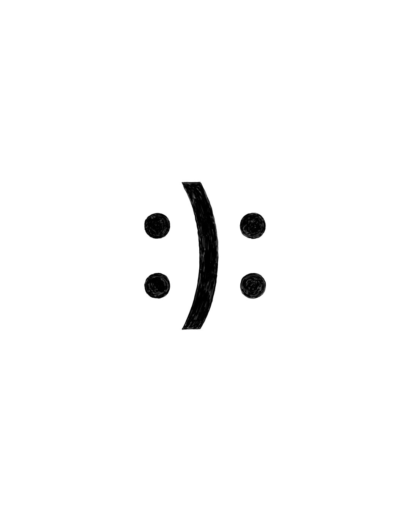

Esto es lo que nadie te dice cuando contratás un desarrollador: a la mayoría nunca le enseñaron a ver. Le enseñaron a entregar. A cerrar tickets. A hacer cosas que funcionan. Funcionar es la base, no el techo — pero la industria decidió quedarse ahí y trabajo terminado.
El resultado es una web que funciona perfectamente y no significa nada.

Kandinsky entendió algo que la industria entera del SaaS olvidó: 'cuando se alcanza un alto nivel de desarrollo de la sensibilidad, los objetos y los seres adquieren un valor interior y, por último, hasta un sonido interno.'
Ese sonido interno es lo que separa un producto que la gente ama de un producto que la gente apenas usa. No se trata de colores ni de tipografías. Se trata de si lo que construiste tiene un punto de vista.
La mayoría de las webs no tienen punto de vista. Tienen una plantilla.
Un desarrollador que nunca estudió composición visual, que nunca pensó por qué el espacio en blanco se siente como respirar o por qué una tipografía mal elegida hace que todo sea más desconfiable — ese desarrollador te va a entregar algo que pasa el test funcional y falla el humano.
Todo el mundo se queja de que WordPress se rompe. Ese es el reclamo equivocado.
WordPress se rompe porque fue construido por un comité de plugins, cada uno escrito por alguien que no sabía qué hacían los demás. No es un sistema de gestión de contenido. Es una negociación entre extraños que vos estás obligado a alojar.
Pero el problema más profundo no es la herramienta. Es el pensamiento detrás de elegirla. ‘Es más rápido de setear’ es la lógica de alguien que optimiza para la entrega, no para lo que se está entregando. Terminás con algo rápido de construir y lento de mantener, barato al principio y caro en el tiempo, edificado sobre decisiones que no tomaste y no podés controlar.
El código limpio escrito con intención no se rompe cuando sopla el viento. Hace exactamente lo que fue diseñado para hacer — nada más, nada menos — porque alguien en realidad pensó en qué necesitaba hacer antes de escribir la primera línea.
Este es el pecado original.
Saber escribir código es una habilidad técnica. Saber qué crear — y cómo tiene que sentirse cuando alguien lo usa — es otra cosa completamente distinta. La industria decidió que eran preocupaciones separadas y contrató en consecuencia: diseñadores por un lado, desarrolladores por el otro, y un muro de mala comunicación en medio.
El resultado son productos que se ven bien en Figma y se sienten horrible en el navegador. O productos que funcionan perfectamente — en lo técnico — con una UX planificada por un sadomasoquista.
Kandinsky pasó años demostrando que las decisiones estéticas no son preferencias subjetivas — son lógica interna precisa. 'Los colores agudos poseen una mayor resonancia en formas angulares [ej: amarillo]. Los colores que tienden a la profundidad son resaltados por formas redondas [ej: azul].' Esto no es opinión. Así funciona la comunicación visual, lo sepa tu desarrollador o no.
La mayoría no lo sabe. Y pagás por esa ignorancia cada día que tu website está online.
Qué realmente necesitás
No un desarrollador. No un diseñador. Alguien que se niegue a tratar esas dos cosas como preocupaciones separadas.
Alguien que aprendió a ver antes de aprender a programar. Que sabe por qué importa una decisión de espaciado, no solo cómo implementarla. Que puede mirar lo que estás construyendo y decirte qué está comunicando antes de que un solo usuario lea una palabra.
Eso es más raro de lo que debería ser. Pero existe.
Y cuesta menos que reconstruir la misma cosa rota por tercera vez.